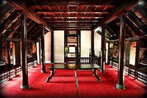

Pathiramanal
This small biodiversity is a paradise for many migratory birds and is located between Thanneermukkam and Kumarakom.

Krishnapuram Palace
It was built in the 18th century by Anizham Thirunal Marthanda Varma (1729–1758 AD), the Travancore kingdom.

Alappuzha Backwaters
Many tourists that come to Alappuzha take a houseboat cruise along the backwaters